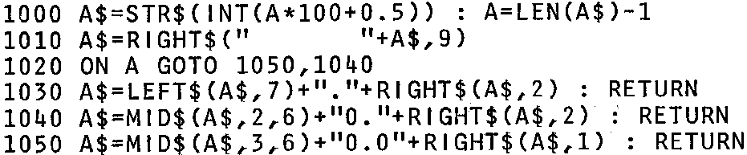

BASIC extra & Memory mapping update
BASIC “PRINT USING” Statement
The Nascom 8K Microsoft Basic does not support any kind of
‘Format statement’, such as ‘PRINT USING’, a fact which can be annoying
if you wish to produce a column of figures. For example, if you wish to
produce a list of items and prices and the prices are say … 12.00,
6.56, 145.02, 0.32 … then using the straight forward ‘PRINT’ command
| this would appear as:– | rather than:– |
| 12 | 12.00 |
| 6.56 | 6.56 |
| 145.02 | 145.02 |
| .32 | 0.32 |
One way to obtain the column on the right is to use a
subroutine to do the formatting for you. The Basic supports a good set
of string functions that makes the implementation of such a subroutine
a fairly simple matter. An example of such a routine is given below.
The variable A (amount) has to be set to the amount (in pounds) to be
printed before the subroutine is called. It returns with the formatted
output in A$. It works for both positive and negative numbers.

Memory Mapping – more information
Following the article on memory mapping in the
last INMC newsletter (No. 6),
here are some brief details of memory usage in the
area 0C00H – 0CFFH, which is intended for use as workspace for the
operating system software and your own programs if you are desparate.
|
– 0C00H – 0C7FH | NAS-SYS work space. See NAS-SYS manual for details.
|
|
– 0C80H – 0CFFH | Possible extended system workspace. 00C90H – 0CFFH is
used by the repeat keyboard routine which is listed in
INMC newletter No. 6.
|
|
– 0D00H – 0DFFH | Workspace for possible future system software, is
also used for Naspen stack and ‘Find string’ space.
|
|
– 0E00H – 0EFFH | Workspace for NAS-DIS and D-BUG, including D-BUG
stack.
|
|
– 0F00H – 0FFFH | Workspace for ZEAP, followed by the user. stack
(0F80H – 0FFFH).
|
There is no reason why areas of RAM should not be used for
different purposes by different pieces of software. The above usage of
0D00H – 0FFFH is applicable in the machine code/assembler programming
environment. Once in Basic, 0D00H – 0F80H is free for you to POKE or
DOKE your machine routines into. We recommend that you use 0D00H
upwards for these – we doubt you will run out of space since most of
these routines are only about 30 bytes long and we have seen one which
was two bytes long!